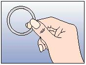
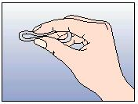
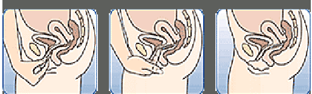
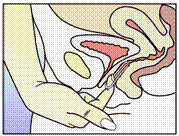
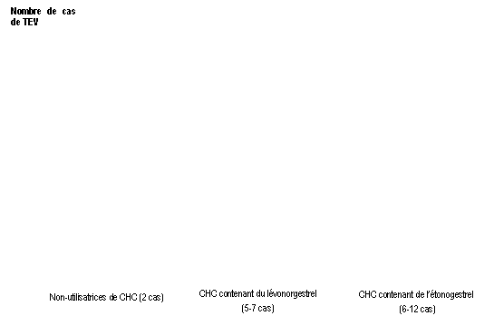

RÉSUMÉ DES CARACTÉRISTIQUES DU PRODUIT
ANSM - Mis à jour le : 30/06/2014
NUVARING 15 microgrammes/120 microgrammes/24 heures, système de diffusion vaginal
2. COMPOSITION QUALITATIVE ET QUANTITATIVE
Ethinylestradiol ........................................................................................................................2,70 mg
Etonogestrel ..........................................................................................................................11,70 mg
Pour un anneau vaginal.
Chaque anneau libère en moyenne 15 microgrammes d'éthinylestradiol et 120 microgrammes d'étonogestrel par 24 heures, pendant une période de 3 semaines.
Pour la liste complète des excipients, voir rubrique 6.1.
Souple, transparent, quasiment incolore dont le diamètre externe est de 54 mm et le diamètre de section de 4 mm.
4.1. Indications thérapeutiques
NUVARING est destiné aux femmes en âge de procréer. La sécurité et l'efficacité ont été établies chez des femmes âgées de 18 à 40 ans.
La décision de prescrire NUVARING doit être prise en tenant compte des facteurs de risque de la patiente, notamment ses facteurs de risque de thrombo-embolie veineuse (TEV), ainsi que du risque de TEV associé à NUVARING en comparaison aux autres CHC (Contraceptifs Hormonaux Combinés) (voir rubriques 4.3 et 4.4).
4.2. Posologie et mode d'administration
Afin d’atteindre une efficacité contraceptive optimale, NUVARING doit être utilisé comme indiqué (voir rubrique « Mode d’emploi de NUVARING » et « Première utilisation de NUVARING »).
Population pédiatrique :
La sécurité et l’efficacité de NUVARING n’ont pas été étudiées chez les adolescentes de moins de 18 ans.
Mode d’administration :
Mode d'emploi de NUVARING :
La femme peut elle-même mettre en place NUVARING dans le vagin. Le médecin doit expliquer à la femme comment mettre en place et retirer NUVARING. Pour l'insertion, la femme devra choisir la position lui paraissant la plus confortable, par exemple debout avec une jambe relevée, accroupie ou couchée. NUVARING doit être pincé et inséré dans le vagin jusqu'à ce qu'aucune gêne ne soit perçue. L'effet contraceptif de l'anneau est assuré quelle que soit sa place dans le vagin (voir Figures 1 à 4).
Une fois inséré dans le vagin (voir "Première utilisation de NUVARING"), NUVARING est laissé en place sans interruption pendant 3 semaines. La femme prendra l’habitude de vérifier régulièrement la présence de NUVARING. Si NUVARING est expulsé accidentellement, la femme doit suivre les instructions de la rubrique 4.2 « Que faire si l’anneau est temporairement resté en dehors du vagin (pour plus d’informations voir aussi la rubrique 4.4 « expulsions »). NUVARING doit être retiré après 3 semaines d'utilisation, le même jour de la semaine que celui où il a été inséré.
Après une période d'une semaine sans anneau, un nouvel anneau est inséré (par exemple, si NUVARING a été inséré un mercredi vers 22.00 heures, l'anneau doit être retiré également le mercredi vers 22.00 heures, 3 semaines plus tard. Un nouvel anneau doit être inséré le mercredi suivant). NUVARING peut être retiré soit en passant l'index sous l'anneau, soit en le saisissant entre l'index et le majeur (voir figure 5).
Une fois utilisé, l'anneau doit être remis dans son sachet (tenu hors de portée des enfants et des animaux de compagnie) et être jeté comme indiqué à la rubrique 6.6.
L'hémorragie de privation apparaît habituellement 2 à 3 jours après le retrait de NUVARING et peut ne pas être complètement terminée lors de l'insertion de l'anneau suivant.
|
|
|
|
|||||||
|
|
 Figure 1 : Otez NUVARING du sachet.
 Figure 2: Pincez l'anneau.
|
Fig. 3 Fig. 3
Fig. 3 Figure 3 : Choisissez une position confortable pour insérer l'anneau. |
|||||||
|
|
 Figure 4A Figure 4B Figure 4C
|
||||||||
Insérez l'anneau dans le vagin avec une main (Figure 4A), en écartant les lèvres à l'aide de l'autre main si nécessaire. Poussez l'anneau dans le vagin jusqu'à ce qu'aucune gêne ne soit perçue (Figure 4B). Laissez l'anneau en place pendant 3 semaines (Figure 4C).
Figure 5 :
NUVARING peut être retiré soit en passant l'index dans l'anneau, soit en le saisissant entre l'index et le majeur.
Première utilisation de NUVARING :
· Pas de contraception hormonale préalable au cours du cycle précédent :
NUVARING doit être inséré le 1er jour du cycle (c'est-à-dire le premier jour des règles). La femme peut également commencer NUVARING entre le 2ème et le 5ème jour du cycle, mais, dans ce cas, il est recommandé d'utiliser une méthode contraceptive complémentaire au cours des 7 premiers jours de ce premier cycle d'utilisation de NUVARING.
· Relais d'un contraceptif hormonal combiné :
La femme doit insérer NUVARING au plus tard le jour suivant l'intervalle habituel sans comprimé ou sans patch, ou, le jour suivant le dernier comprimé placebo du contraceptif hormonal combiné. Si la méthode précédente a été utilisée correctement et conformément aux recommandations et si une grossesse peut être raisonnablement écartée, le relais par NUVARING peut également être effectué n’importe quel jour du cycle.
L’intervalle libre de la méthode précédente ne doit jamais excéder la durée recommandée.
· Relais d'une méthode uniquement progestative (pilule microprogestative, implant ou injection) ou relais d’un système intrautérin libérant un progestatif (SIU) :
La femme peut commencer NUVARING n'importe quel jour de la prise d'une pilule microprogestative (dans le cas d'un implant ou d’un SIU, la mise en place de l'anneau se fait le jour du retrait de l'implant ou du SIU, et dans le cas d'une injection, le jour où aurait dû avoir lieu la prochaine injection) mais elle doit, dans tous ces cas, utiliser une méthode contraceptive complémentaire (de type barrière) pendant les 7 premiers jours d’utilisation de NUVARING.
· Après un avortement du premier trimestre :
La femme peut commencer immédiatement. Dans ce cas, il n'est pas nécessaire qu'elle utilise une méthode contraceptive complémentaire. Si un passage immédiat à NUVARING n'est pas souhaitable, la femme devra respecter les recommandations mentionnées à la rubrique "Pas de contraception hormonale préalable au cours du cycle précédent". Pendant la période intermédiaire, il faut lui conseiller d'utiliser une autre méthode contraceptive.
· Après un accouchement ou un avortement du second trimestre :
Pour les femmes qui allaitent, voir la rubrique 4.6.
Il sera conseillé aux femmes de commencer NUVARING au cours de la quatrième semaine après l'accouchement ou après l’avortement du second trimestre. Si l'utilisation de NUVARING a été plus tardive, la femme doit utiliser en plus une méthode contraceptive complémentaire pendant les 7 premiers jours d'utilisation de NUVARING. Cependant, si des rapports sexuels ont déjà eu lieu, toute grossesse devra être exclue avant de commencer NUVARING ou bien la femme devra attendre la survenue de ses premières règles normales.
Non respect des instructions d'utilisation :
L'efficacité contraceptive et le contrôle du cycle peuvent être compromis si la femme ne respecte pas les instructions d'utilisation. Dans ce cas, pour éviter la perte d'efficacité contraceptive, les recommandations suivantes peuvent être données :
· Que faire si la période sans anneau a excédé 7 jours :
Dès que la femme s'aperçoit de l'oubli, elle doit mettre en place un nouvel anneau. Une méthode contraceptive supplémentaire, comme le préservatif doit être utilisée pendant les 7 jours suivants. Si des rapports sexuels ont eu lieu pendant l'intervalle de temps sans anneau, la possibilité d'une grossesse devra être évoquée. Le risque de grossesse est d'autant plus élevé que la durée de l'intervalle sans anneau est plus longue.
· Que faire si l'anneau est temporairement resté en dehors du vagin :
NUVARING doit être laissé en place dans le vagin en continu pendant une période de 3 semaines. Si l'anneau est accidentellement expulsé, il doit être rincé à l’eau froide ou tiède (mais pas chaude) et être réinséré immédiatement.
Si NUVARING est resté en dehors du vagin pendant moins de 3 heures, l'efficacité contraceptive n'est pas réduite. La femme doit remettre l'anneau en place dès que possible, au plus tard dans un délai de 3 heures.
Si NUVARING est resté en dehors du vagin pendant plus de 3 heures, ou en cas de doute sur la durée pendant laquelle l’anneau est resté en dehors du vagin, lors de la 1ère ou de la 2ème semaine du cycle, l'efficacité contraceptive peut être réduite. La femme doit remettre l'anneau en place dès qu'elle s'en rend compte et utiliser simultanément une méthode contraceptive supplémentaire, comme le préservatif pendant les 7 jours suivants. Le risque de grossesse est d'autant plus élevé que la période pendant laquelle NUVARING est resté en dehors du vagin est longue et proche de l'intervalle habituel sans anneau.
Si NUVARING est resté en dehors du vagin pendant plus de 3 heures, ou en cas de doute sur la durée pendant laquelle l’anneau est resté en dehors du vagin, lors de la 3ème semaine du cycle, l'efficacité contraceptive peut être réduite. La femme doit jeter cet anneau et choisir l'une des 2 options suivantes :
1) Insérer un nouvel anneau immédiatement.
Remarque : L'insertion de ce nouvel anneau marquera le début de la période suivante de 3 semaines d'utilisation. La femme peut ne pas avoir les règles correspondant à son précédent cycle. Cependant des spottings ou des saignements peuvent apparaître.
2) Attendre la survenue des règles et insérer un nouvel anneau au plus tard dans les 7 jours
(7x24 heures) qui suivent le retrait ou l'expulsion de l'anneau précédent.
Attention : Cette option ne devra être choisie que si l'anneau a été utilisé de façon continue pendant les 7 jours précédents.
· Que faire en cas d'une utilisation prolongée de l'anneau :
Si la durée d'utilisation de NUVARING n'a pas dépassé 4 semaines, l'efficacité contraceptive est toujours assurée, cependant cette durée d’utilisation n’est pas préconisée. La femme peut respecter l’intervalle d’une semaine sans anneau puis insérer un nouvel anneau. Si NUVARING est laissé en place pendant plus de 4 semaines, l'efficacité contraceptive peut être réduite et une grossesse doit être exclue avant la mise en place d'un nouvel anneau.
Si la femme n'a pas respecté les instructions d'utilisation et n'a pas d’hémorragie de privation durant l'intervalle suivant sans anneau, une grossesse doit être exclue avant la mise en place d'un nouvel anneau.
Comment décaler ou retarder les règles :
De façon exceptionnelle, pour retarder les règles, la femme peut mettre en place un nouvel anneau à la suite du précédent sans respecter la semaine habituelle sans anneau. L'anneau suivant peut alors être utilisé pendant une période de 3 semaines. Des saignements ou des spottings peuvent apparaître. L'utilisation normale de NUVARING est ensuite reprise après l’intervalle habituel d’une semaine sans anneau.
Pour décaler la survenue des règles, on peut conseiller à la femme de raccourcir l'intervalle sans anneau, du nombre de jours qu'elle souhaite. Plus l'intervalle sans anneau sera court, plus le risque de ne pas avoir d'hémorragie de privation et de présenter des saignements et des spottings pendant l'utilisation de l'anneau suivant sera élevé.
· Présence ou risque de thrombo-embolie veineuse (TEV)
o Thrombo-embolie veineuse – présence de TEV (patiente traitée par des anticoagulants) ou antécédents de TEV (p. ex. thrombose veineuse profonde [TVP] ou embolie pulmonaire [EP]).
o Prédisposition connue, héréditaire ou acquise, à la thrombo-embolie veineuse, telle qu’une résistance à la protéine C activée (PCa) (y compris une mutation du facteur V de Leiden), un déficit en antithrombine III, un déficit en protéine C, un déficit en protéine S.
o Intervention chirurgicale majeure avec immobilisation prolongée (voir rubrique 4.4).
o Risque élevé de thrombo-embolie veineuse dû à la présence de multiples facteurs de risque (voir rubrique 4.4).
· Présence ou risque de thrombo-embolie artérielle (TEA)
o Thrombo-embolie artérielle – présence ou antécédents de thrombo-embolie artérielle (p. ex. infarctus du myocarde [IM]) ou de prodromes (p. ex. angine de poitrine).
o Affection cérébrovasculaire – présence ou antécédents d’accident vasculaire cérébral (AVC) ou de prodromes (p. ex. accident ischémique transitoire [AIT]).
o Prédisposition connue, héréditaire ou acquise, à la thrombo-embolie artérielle, telle qu’une hyperhomocystéinémie ou la présence d’anticorps anti-phospholipides (anticorps anti-cardiolipine, anticoagulant lupique).
o Antécédents de migraine avec signes neurologiques focaux.
o Risque élevé de thrombo-embolie artérielle dû à la présence de multiples facteurs de risque (voir rubrique 4.4) ou d’un facteur de risque sévère tel que :
§ diabète avec symptômes vasculaires,
§ hypertension artérielle sévère,
§ dyslipoprotéinémie sévère.
· Présence ou antécédents d'affections hépatiques sévères jusqu'à normalisation des paramètres de la fonction hépatique.
· Pancréatite ou antécédent de pancréatite surtout si associé à une hypertriglycéridémie sévère.
· Présence ou antécédents de tumeurs hépatiques (bénignes ou malignes).
· Diagnostic ou suspicion d'affections malignes hormonodépendantes des organes génitaux ou du sein.
· Hémorragies génitales non diagnostiquées.
· Hypersensibilité à l'une des substances actives ou à l'un des excipients de NUVARING (listés à la rubrique 6.1).
4.4. Mises en garde spéciales et précautions d'emploi
Si la patiente présente l’un des troubles ou l'un des facteurs de risque mentionnés ci-dessous, la pertinence du traitement par NUVARING doit être discutée avec elle.
En cas d'aggravation ou de survenue de l’un de ces troubles ou facteurs de risque, la nécessité d’interrompre l’utilisation de NUVARING doit être discutée entre le médecin et la patiente.
1. Troubles circulatoires :
Risque de thrombo-embolie veineuse (TEV)
· Le risque de TEV est augmenté chez les femmes qui utilisent un contraceptif hormonal combiné (CHC) en comparaison aux femmes qui n’en utilisent pas. Les CHC contenant du lévonorgestrel, du norgestimate ou de la noréthistérone sont associés au risque de TEV le plus faible. Le risque de TEV associé aux autres CHC, tels que NUVARING, peut être jusqu’à deux fois plus élevé. La décision d’utiliser tout autre CHC que ceux associés au risque de TEV le plus faible doit être prise uniquement après concertation avec la patiente afin de s’assurer qu’elle comprend le risque de TEV associé à NUVARING, l’influence de ses facteurs de risque actuels sur ce risque et le fait que le risque de TEV est maximal pendant la première année d’utilisation.
Certaines données indiquent également une augmentation du risque lors de la reprise d’un CHC après une interruption de 4 semaines ou plus.
· Parmi les femmes qui n’utilisent pas de CHC et qui ne sont pas enceintes, environ 2 sur 10 000 développeront une TEV sur une période d’un an. Cependant, chez une femme donnée, le risque peut être considérablement plus élevé, selon les facteurs de risque qu’elle présente (voir ci-dessous).
· On estime que sur 10 000 femmes qui utilisent un CHC faiblement dosé contenant du lévonorgestrel, environ 61 développeront une TEV sur une période d’un an. Des résultats contradictoires ont été obtenus concernant le risque de TEV associé à NUVARING en comparaison aux CHC contenant du lévonorgestrel (avec des estimations du risque relatif allant d’une absence d’augmentation [RR = 0,96] à un risque pratiquement multiplié par 2 [RR = 1,90]). Ceci correspond à environ 6 à 12 cas de TEV par an pour 10 000 femmes utilisant NUVARING.
1 Point central de l’intervalle de 5-7 pour 10 000 années-femmes sur la base d’un risque relatif, pour les CHC contenant du lévonorgestrel par rapport à la non-utilisation d’un CHC, d’environ 2,3 à 3,6
· Dans les deux cas, le nombre de TEV par année est inférieur à celui attendu pendant la grossesse ou en période post-partum.
· La TEV peut être fatale dans 1 à 2 % des cas.
Nombre de cas de TEV pour 10 000 femmes sur une période d’un an
|  |
De façon extrêmement rare, des cas de thrombose chez les utilisatrices de CHC ont été signalés dans d'autres vaisseaux sanguins, p. ex. les veines et artères hépatiques, mésentériques, rénales ou rétiniennes.
Facteurs de risque de TEV
Le risque de complications thrombo-emboliques veineuses chez les utilisatrices de CHC peut être considérablement accru si d’autres facteurs de risque sont présents, en particulier si ceux-ci sont multiples (voir le tableau ci-dessous).
NUVARING est contre-indiqué chez les femmes présentant de multiples facteurs de risque, ceux-ci les exposant à un risque élevé de thrombose veineuse (voir rubrique 4.3). Lorsqu’une femme présente plus d’un facteur de risque, il est possible que l’augmentation du risque soit supérieure à la somme des risques associés à chaque facteur pris individuellement – dans ce cas, le risque global de TEV doit être pris en compte. Si le rapport bénéfice/risque est jugé défavorable, le CHC ne doit pas être prescrit (voir rubrique 4.3).
Tableau : Facteurs de risque de TEV
|
Facteur de risque |
Commentaire |
|
Obésité (indice de masse corporelle supérieur à 30 kg/m²) |
L’élévation de l’IMC augmente considérablement le risque. Ceci est particulièrement important à prendre en compte si d’autres facteurs de risque sont présents. |
|
Immobilisation prolongée, intervention chirurgicale majeure, toute intervention chirurgicale sur les jambes ou le bassin, neurochirurgie ou traumatisme majeur
Remarque : l’immobilisation temporaire, y compris les trajets aériens > 4 heures, peut également constituer un facteur de risque de TEV, en particulier chez les femmes présentant d’autres facteurs de risque |
Dans ces situations, il est conseillé de suspendre l’utilisation de l’anneau (au moins quatre semaines à l’avance en cas de chirurgie programmée) et de ne reprendre le CHC que deux semaines au moins après la complète remobilisation. Une autre méthode de contraception doit être utilisée afin d’éviter une grossesse non désirée. Un traitement anti-thrombotique devra être envisagé si NUVARING n’a pas été interrompu à l’avance.
|
|
Antécédents familiaux (thrombo-embolie veineuse survenue dans la fratrie ou chez un parent, en particulier à un âge relativement jeune, c.-à-d. avant 50 ans) |
En cas de prédisposition héréditaire suspectée, la femme devra être adressée à un spécialiste pour avis avant toute décision concernant l’utilisation de CHC |
|
Autres affections médicales associées à la TEV |
Cancer, lupus érythémateux disséminé, syndrome hémolytique et urémique, maladies inflammatoires chroniques intestinales (maladie de Crohn ou rectocolite hémorragique) et drépanocytose |
|
Âge |
En particulier au-delà de 35 ans |
· Il n’existe aucun consensus quant au rôle éventuel joué par les varices et les thrombophlébites superficielles dans l’apparition ou la progression d’une thrombose veineuse.
· L’augmentation du risque de thrombo-embolie pendant la grossesse, et en particulier pendant les 6 semaines de la période puerpérale, doit être prise en compte (pour des informations concernant « Grossesse et allaitement », voir rubrique 4.6).
Symptômes de TEV (thrombose veineuse profonde et embolie pulmonaire)
Les femmes doivent être informées qu’en cas d’apparition de ces symptômes, elles doivent consulter un médecin en urgence et lui indiquer qu’elles utilisent un CHC.
Les symptômes de la thrombose veineuse profonde (TVP) peuvent inclure :
· gonflement unilatéral d’une jambe et/ou d’un pied ou le long d’une veine de la jambe ;
· douleur ou sensibilité dans une jambe, pouvant n’être ressentie qu’en position debout ou lors de la marche ;
· sensation de chaleur, rougeur ou changement de la coloration cutanée de la jambe affectée.
Les symptômes de l’embolie pulmonaire (EP) peuvent inclure :
· apparition soudaine et inexpliquée d’un essoufflement ou d’une accélération de la respiration ;
· toux soudaine, pouvant être associée à une hémoptysie ;
· douleur thoracique aiguë ;
· étourdissements ou sensations vertigineuses sévères ;
· battements cardiaques rapides ou irréguliers.
Certains de ces symptômes (p. ex. « essoufflement », « toux ») ne sont pas spécifiques et peuvent être interprétés à tort comme des signes d’événements plus fréquents ou moins sévères (infections respiratoires, p. ex.).
Les autres signes d’une occlusion vasculaire peuvent inclure : douleur soudaine, gonflement et coloration légèrement bleutée d’une extrémité.
Si l’occlusion se produit dans l’œil, les symptômes peuvent débuter sous la forme d’une vision trouble indolore pouvant évoluer vers une perte de la vision. Dans certains cas, la perte de la vision peut survenir presque immédiatement.
Risque de thrombo-embolie artérielle (TEA)
Des études épidémiologiques ont montré une association entre l’utilisation de CHC et l’augmentation du risque de thrombo-embolie artérielle (infarctus du myocarde) ou d’accident cérébrovasculaire (p. ex. accident ischémique transitoire, AVC). Les événements thrombo-emboliques artériels peuvent être fatals.
Facteurs de risque de TEA
Le risque de complications thrombo-emboliques artérielles ou d’accident cérébrovasculaire chez les utilisatrices de CHC augmente avec la présence de facteurs de risque (voir le tableau). NUVARING est contre-indiqué chez les femmes présentant un facteur de risque sévère ou de multiples facteurs de risque de TEA qui les exposent à un risque élevé de thrombose artérielle (voir rubrique 4.3). Lorsqu’une femme présente plus d’un facteur de risque, il est possible que l’augmentation du risque soit supérieure à la somme des risques associés à chaque facteur pris individuellement – dans ce cas, le risque global doit être pris en compte. Si le rapport bénéfice/risque est jugé défavorable, le CHC ne doit pas être prescrit (voir rubrique 4.3).
Tableau : Facteurs de risque de TEA
|
Facteur de risque |
Commentaire |
|
Âge |
En particulier au-delà de 35 ans |
|
Tabagisme |
Il doit être conseillé aux femmes de ne pas fumer si elles souhaitent utiliser un CHC. Il doit être fortement conseillé aux femmes de plus de 35 ans qui continuent de fumer d’utiliser une méthode de contraception différente. |
|
Hypertension artérielle |
|
|
Obésité (indice de masse corporelle supérieur à 30 kg/m2) |
L’élévation de l’IMC augmente considérablement le risque. Ceci est particulièrement important à prendre en compte chez les femmes présentant d’autres facteurs de risque. |
|
Antécédents familiaux (thrombo-embolie artérielle survenue dans la fratrie ou chez un parent, en particulier à un âge relativement jeune, c.-à-d. avant 50 ans) |
En cas de prédisposition héréditaire suspectée, la femme devra être adressée à un spécialiste pour avis avant toute décision concernant l’utilisation de CHC. |
|
Migraine |
L’accroissement de la fréquence ou de la sévérité des migraines lors de l’utilisation d’un CHC (qui peut être le prodrome d’un événement cérébrovasculaire) peut constituer un motif d’arrêt immédiat du CHC. |
|
Autres affections médicales associées à des événements indésirables vasculaires |
Diabète, hyperhomocystéinémie, valvulopathie cardiaque et fibrillation auriculaire, dyslipoprotéinémie et lupus érythémateux disséminé |
Symptômes de TEA
Les femmes doivent être informées qu’en cas d’apparition de ces symptômes, elles doivent consulter un médecin en urgence et lui indiquer qu’elles utilisent un CHC.
Les symptômes d’un accident cérébrovasculaire peuvent inclure :
· apparition soudaine d’un engourdissement ou d’une faiblesse du visage, d’un bras ou d’une jambe, en particulier d’un côté du corps ;
· apparition soudaine de difficultés à marcher, de sensations vertigineuses, d’une perte d’équilibre ou de coordination ;
· apparition soudaine d’une confusion, de difficultés à parler ou à comprendre ;
· apparition soudaine de difficultés à voir d’un œil ou des deux yeux ;
· céphalée soudaine, sévère ou prolongée, sans cause connue ;
· perte de conscience ou évanouissement avec ou sans crise convulsive.
Des symptômes temporaires suggèrent qu’il s’agit d’un accident ischémique transitoire (AIT).
Les symptômes de l’infarctus du myocarde (IM) peuvent inclure :
· douleur, gêne, pression, lourdeur, sensation d’oppression ou d’encombrement dans la poitrine, le bras ou sous le sternum ;
· sensation de gêne irradiant vers le dos, la mâchoire, la gorge, le bras, l’estomac ;
· sensation d’encombrement, d’indigestion ou de suffocation ;
· transpiration, nausées, vomissements ou sensations vertigineuses ;
· faiblesse, anxiété ou essoufflement extrêmes ;
· battements cardiaques rapides ou irréguliers.
En cas de TEV ou TEA suspectée ou confirmée, l'utilisation des CHC doit être interrompue. Un mode de contraception adéquat doit être initié en raison de la tératogénicité des traitements anti-coagulants (coumarines).
2. Tumeurs :
· Certaines études épidémiologiques rapportent que l'utilisation à long terme de contraceptifs oraux est un facteur de risque de développement du cancer du col de l'utérus chez les femmes contaminées par le papillomavirus humain (HPV).
Cependant il persiste une controverse sur l'importance de cette conclusion en raison de la présence de facteurs confondants (tels que les différences dans le nombre de partenaires sexuels, ou l'utilisation de méthodes contraceptives mécaniques). Aucune donnée épidémiologique sur le risque de cancer du col de l'utérus chez les utilisatrices de NUVARING n'est disponible (voir rubrique ”Examen Médical/Consultation”).
· Une méta-analyse portant sur 54 études épidémiologiques a rapporté qu'il existait un risque relatif légèrement plus élevé (RR = 1,24) de diagnostiquer un cancer du sein chez les femmes prenant régulièrement des COC. L'augmentation de ce risque disparaît progressivement dans les 10 ans qui suivent l'arrêt de l'utilisation de COC. Le cancer du sein étant rare chez les femmes de moins de 40 ans, l'augmentation des cancers du sein diagnostiqués chez les utilisatrices récentes et régulières de COC est faible par rapport au risque global de cancer du sein. Les cas de cancers du sein diagnostiqués chez les utilisatrices au long cours tendent à être à un stade moins avancé que ceux des patientes n'ayant jamais utilisé de COC.
L'augmentation du risque observé chez les utilisatrices de COC peut être liée à un diagnostic plus précoce du cancer du sein, aux effets biologiques des COC ou à l'association des deux.
· Dans de rares cas, des tumeurs hépatiques bénignes et plus rarement encore, des tumeurs hépatiques malignes ont été rapportées chez des utilisatrices de COC. Dans des cas isolés, ces tumeurs ont entraîné des hémorragies intra-abdominales menaçant le pronostic vital. En conséquence, en cas de douleur épigastrique aiguë, d'hépatomégalie ou de signes d'hémorragie intra-abdominale chez des femmes utilisant NUVARING, une tumeur hépatique doit être recherchée.
3. Autres affections :
· Les femmes ayant une hypertriglycéridémie ou des antécédents familiaux peuvent présenter un risque plus élevé de pancréatite lors de l'utilisation de contraceptifs hormonaux.
· Des cas d'augmentation modérée de la pression artérielle ont été observés chez de nombreuses patientes utilisant des contraceptifs hormonaux ; les augmentations ayant des conséquences cliniques sont cependant rares. L’existence d’une relation certaine de cause à effet entre l'utilisation d'un contraceptif hormonal et une hypertension artérielle clinique n'a pas été établie. Néanmoins, si une hypertension artérielle prolongée et cliniquement significative survient pendant l'utilisation de NUVARING, la prudence impose alors au médecin de suspendre l'utilisation de l'anneau et de traiter l'hypertension. Dans certains cas, l'utilisation de NUVARING peut être reprise si des valeurs normales de pression artérielle sont obtenues sous traitement antihypertenseur.
· Les affections suivantes sont apparues ou se sont aggravées en cas de grossesse ou d'utilisation de contraceptifs hormonaux, mais leur imputabilité n'est pas certaine : ictère et/ou prurit en relation avec une cholestase, lithiase biliaire, porphyrie, lupus érythémateux disséminé, syndrome urémique et hémolytique, chorée de Sydenham, herpès gestationis, perte de l'audition liée à une otosclérose, angioedème (héréditaire).
· Des troubles aigus ou chroniques de la fonction hépatique peuvent imposer l'arrêt de l'utilisation de NUVARING jusqu'à la normalisation des paramètres hépatiques. La réapparition d'un ictère cholestatique et/ou d'un prurit lié à une cholestase après une première apparition au cours d'une grossesse ou lors d'une utilisation antérieure de stéroïdes sexuels, impose l'arrêt de l'utilisation de l'anneau.
· Chez les diabétiques utilisant une contraception hormonale, il n'existe aucun élément imposant une modification du schéma thérapeutique même si les estrogènes et les progestatifs peuvent avoir un effet sur la sensibilité périphérique à l'insuline et sur la tolérance au glucose. Les femmes diabétiques doivent néanmoins être attentivement suivies pendant l'utilisation de NUVARING, notamment pendant les premiers mois d'utilisation.
· Une aggravation de la maladie de Crohn et des colites ulcéreuses a été associée à l'utilisation de contraceptifs hormonaux.
· Un chloasma peut occasionnellement survenir, notamment chez les femmes ayant des antécédents de chloasma gravidique. Les femmes ayant des prédispositions au chloasma doivent éviter de s'exposer au soleil ou aux ultraviolets pendant l'utilisation de NUVARING.
· Si une femme présente l'une des affections suivantes, il est possible qu'elle ne parvienne pas à placer correctement NUVARING ou qu'elle perde l'anneau : prolapsus du col utérin, cystocèle et/ou rectocèle, constipation sévère ou chronique.
Très rarement, il a été rapporté que NUVARING pouvait être inséré par inadvertance dans l’urètre et arriver dans la vessie. Donc un mauvais positionnement doit être évoqué dans un diagnostic différentiel devant des symptômes de cystite.
· Chez les femmes utilisant NUVARING, des vaginites peuvent occasionnellement survenir. Il n'existe aucun élément indiquant que l'efficacité de NUVARING est affectée par le traitement de la vaginite ou que l'utilisation de NUVARING affecte le traitement de la vaginite (cf. Rubrique 4.5).
· Très rarement, il a été rapporté que l’anneau a pu adhérer à la paroi du vagin, nécessitant l’intervention d’un médecin pour le retrait.
Examen médical/Consultation :
Avant l’instauration ou la reprise d’un traitement par NUVARING, une recherche complète des antécédents médicaux (y compris les antécédents familiaux) doit être effectuée et la présence d’une grossesse doit être exclue. La pression artérielle doit être mesurée et un examen physique doit être réalisé, en ayant à l’esprit les contre-indications (voir rubrique 4.3) et les mises en garde (voir rubrique 4.4). Il est important d’attirer l’attention des patientes sur les informations relatives à la thrombose veineuse et artérielle, y compris le risque associé à NUVARING comparé à celui associé aux autres CHC, les symptômes de la TEV et de la TEA, les facteurs de risque connus et la conduite à tenir en cas de suspicion de thrombose.
Il doit également être indiqué aux patientes de lire attentivement la notice et de suivre les conseils fournis. La fréquence et la nature des examens doivent être définies sur la base des recommandations en vigueur et adaptées à chaque patiente.
Les patientes doivent être averties que les contraceptifs hormonaux ne protègent pas contre l’infection par le VIH (SIDA) et les autres maladies sexuellement transmissibles.
Diminution de l'efficacité :
L'efficacité de NUVARING peut être réduite en cas de mauvaise observance (rubrique 4.2) ou de traitement médicamenteux concomitant (rubrique 4.5).
Anomalie du contrôle du cycle :
Pendant l'utilisation de NUVARING, des saignements irréguliers (spottings ou métrorragies) peuvent survenir. Si des saignements irréguliers surviennent alors que les cycles antérieurs étaient réguliers et que NUVARING a été utilisé conformément aux instructions, des causes non-hormonales devront être recherchées et des mesures diagnostiques appropriées devront être prises pour exclure une affection maligne ou une grossesse.
Ces mesures peuvent inclure un curetage.
Chez certaines femmes, les hémorragies de privation peuvent ne pas survenir pendant l'intervalle sans anneau. Si NUVARING a été utilisé conformément aux instructions décrites à la rubrique 4.2, il est peu probable que la femme soit enceinte. Néanmoins, si NUVARING n'a pas été utilisé conformément à ces instructions avant la première absence de règles ou si les règles sont absentes 2 fois de suite, une grossesse doit être exclue avant de poursuivre l'utilisation de NUVARING.
Exposition masculine à l'éthinylestradiol et à l'étonogestrel :
L'importance et l’effet pharmacologique possible de l'exposition des partenaires sexuels masculins à l'éthinylestradiol et à l'étonogestrel par absorption par le pénis n'ont pas été étudiés.
Ruptures d'anneaux
De très rares cas de rupture d'anneau ont été rapportés durant leur utilisation (cf. rubrique 4.5). Il est conseillé à la femme de retirer l'anneau rompu et de réinsérer un nouvel anneau dès que possible. Une méthode contraceptive mécanique complémentaire, comme le préservatif, doit être utilisée simultanément pendant les 7 jours suivants. L'éventualité d'une grossesse doit être évoquée et la femme doit contacter son médecin.
Expulsion
Des expulsions de l’anneau ont été rapportées, par exemple quand l’anneau n’a pas été correctement mis en place, lors du retrait d’un tampon, pendant les rapports sexuels, ou en cas de constipation sévère ou chronique. Une expulsion prolongée de l’anneau peut entraîner un échec contraceptif ou des saignements irréguliers. En conséquence pour assurer l’efficacité de NUVARING, il faut conseiller à la femme de vérifier régulièrement la présence de NUVARING.
Si NUVARING est accidentellement expulsé et resté en dehors du vagin pendant moins de 3 heures, l’efficacité contraceptive n’est pas réduite. La femme doit rincer l’anneau à l’eau froide ou tiède (mais pas chaude) et le réinsérer dès que possible, au plus tard dans les 3 heures.
Si NUVARING est resté en dehors du vagin pendant plus de 3 heures, ou en cas de doute sur la durée pendant laquelle l’anneau est resté en dehors du vagin, l’efficacité contraceptive peut être réduite. Dans ce cas, les instructions de la rubrique 4.2 « Que faire si l’anneau est temporairement resté en dehors du vagin » doivent être suivies.
4.5. Interactions avec d'autres médicaments et autres formes d'interactions
Interactions médicamenteuses
Des interactions entre les contraceptifs hormonaux et d'autres médicaments peuvent conduire à des saignements irréguliers et/ou à des échecs contraceptifs. Les interactions suivantes ont été rapportées dans la littérature.
Métabolisme hépatique : Des interactions peuvent se produire avec des inducteurs enzymatiques microsomiaux, entraînant une augmentation de la clairance des hormones sexuelles (tels que, phénytoïne, phénobarbital, primidone, carbamazépine, rifampicine mais aussi, oxcarbazépine, topiramate, felbamate, ritonavir, griséofulvine, et produits contenant du millepertuis).
Les femmes traitées par l'un de ces produits doivent temporairement associer à NUVARING une méthode de contraception complémentaire non hormonale ou choisir une autre méthode de contraception. En cas de prise concomitante de médicaments inducteurs enzymatiques microsomiaux, la méthode de contraception complémentaire non hormonale doit être utilisée pendant toute la durée du traitement et pendant les 28 jours suivant son arrêt.
Si la prise de ces médicaments en association avec NUVARING dépasse les 3 semaines du cycle avec l'anneau, l'anneau suivant devra être inséré immédiatement sans respecter l'intervalle habituel sans anneau.
Des échecs de l'effet contraceptif ont aussi été observés avec les antibiotiques, tels que les pénicillines et les tétracyclines. Le mécanisme de cet effet n'a pas été élucidé. Dans une étude pharmacocinétique sur les interactions, l'administration orale d'amoxiciline (875 mg 2 fois par jour) ou de doxycycline (200 mg le premier jour, suivi de 100 mg par jour) pendant 10 jours concomitamment à l'utilisation de NUVARING n'a pas eu d'effet significatif sur la pharmacocinétique de l'éthinylestradiol et de l'étonogestrel. Les femmes sous traitement antibiotique (à l'exception de l'amoxiciline et de la doxycycline) doivent utiliser une méthode contraceptive mécanique pendant le traitement et jusqu'à 7 jours après l'arrêt de celui-ci. Si l'administration concomitante de l'un de ces médicaments dépasse les 3 semaines du cycle avec anneau, l'anneau suivant devra être inséré immédiatement sans respecter l'intervalle habituel sans anneau.
D'après les données pharmacocinétiques, il est peu probable que les antimycosiques administrés par voie vaginale ainsi que les spermicides affectent l'efficacité contraceptive et la sécurité d'emploi de NUVARING. Pendant l’utilisation concomitante d’ovules antimycosiques, le risque de rupture d’anneau peut être légèrement plus élevé (cf. rubrique 4.4 « Ruptures d’anneaux »).
Les contraceptifs hormonaux peuvent interférer avec le métabolisme d’autres médicaments. En conséquence, les concentrations plasmatiques et tissulaires peuvent augmenter (par ex. ciclosporine) ou diminuer (par ex. lamotrigine).
Les résumés des caractéristiques des autres produits utilisés de façon concomitante doivent être consultés pour identifier les interactions potentielles.
Analyses biologiques
L'utilisation de stéroïdes contraceptifs peut influencer les résultats de certains paramètres biologiques dont les paramètres biochimiques hépatiques, thyroïdiens, surrénaliens et rénaux, les taux sériques de protéines porteuses (par exemple la "corticosteroid binding globulin" et la "sex hormone binding globulin"), les fractions lipidiques/lipoprotéiniques, les paramètres du métabolisme des hydrates de carbone et les paramètres de la coagulation et de la fibrinolyse. Les modifications restent en général dans les valeurs normales.
Interactions avec les tampons
Les données pharmacocinétiques montrent que l'utilisation de tampons n'a aucun effet sur l'absorption systémique des hormones libérées par NUVARING. Dans de rares cas, NUVARING peut être expulsé lors du retrait du tampon (cf. "Que faire si l'anneau est temporairement resté en dehors du vagin").
Aucune étude d’interaction n’a été réalisée.
NUVARING est indiqué pour prévenir les grossesses. Si la femme veut arrêter NUVARING pour débuter une grossesse, il lui est conseillé d’attendre d’avoir eu un cycle naturel avant d’essayer de concevoir car cela facilitera le calcul de la date de la naissance.
Grossesse
NUVARING n'est pas indiqué pendant la grossesse. Si une grossesse survient lors de l'utilisation de NUVARING, l'anneau devra être retiré. De larges études épidémiologiques n’ont pas montré d’augmentation du risque de malformation chez les enfants nés de femmes ayant utilisé des COC avant la grossesse, ni d'effet tératogène chez les femmes ayant utilisé des COC par mégarde au début de la grossesse.
Une étude clinique chez un nombre restreint de femmes a montré que malgré l’administration intravaginale, les concentrations intra-utérines des stéroïdes contraceptifs chez les utilisatrices de NUVARING sont comparables aux concentrations observées chez les utilisatrices de COC (voir rubrique 5.2). L'expérience clinique des conséquences des grossesses exposées à NUVARING n'est pas connue.
L’augmentation du risque de TEV en période post-partum doit être prise en compte lors de la reprise de NUVARING (voir rubriques 4.2 et 4.4).
Les estrogènes peuvent influencer la lactation en diminuant la quantité du lait maternel et en modifiant sa composition. Par conséquent, l'utilisation de NUVARING n'est pas recommandée chez les femmes qui allaitent. De faibles quantités de stéroïdes contraceptifs et/ou de leurs métabolites peuvent passer dans le lait mais il n'existe aucun élément indiquant un effet néfaste sur la santé des nourrissons.
4.7. Effets sur l'aptitude à conduire des véhicules et à utiliser des machines
Les effets indésirables les plus fréquemment rapportés dans les études cliniques avec NUVARING ont été les céphalées, les infections vaginales et les pertes vaginales, chaque effet ayant été rapporté par 5 à 6% des femmes.
Description de certains effets indésirables particuliers
Une augmentation du risque d'événement thrombotique et thrombo-embolique artériel et veineux, incluant l’infarctus du myocarde, l’AVC, les accidents ischémiques transitoires, la thrombose veineuse et l’embolie pulmonaire, a été observée chez les femmes utilisant des CHC ; ceci est abordé plus en détails en rubrique 4.4.
D’autres effets indésirables ont également été rapportés chez les femmes utilisant des CHC : ils sont abordés plus en détails en rubrique 4.4.
Les évènements indésirables ayant été rapportés avec NUVARING dans les essais cliniques, les études observationnelles, ou depuis la commercialisation sont listés dans le tableau ci-dessous. Les termes MedDRA les plus appropriés pour décrire un type d'effet indésirable ont été retenus.
Tous les évènements indésirables sont listés par classes de systèmes d’organes et par fréquences ; fréquent (≥1/100 à <1/10), peu fréquent (≥1/1000 à <1/100), rare (≥1/10000 à <1/1000) et fréquence indéterminée (ne peut être estimée sur la base des données disponibles).
|
Classes de systèmes d’organes |
Fréquent |
Peu fréquent |
Rare |
Fréquence indéterminée1 |
|
Infections et infestations |
Infections vaginales |
Cervicite, cystite, infection urinaire |
|
|
|
Troubles du système immunitaire |
|
|
|
Réaction d’hypersensibilité |
|
Affections du métabolisme et de la nutrition |
|
Augmentation de l’appétit |
|
|
|
Affections psychiatriques |
Dépression, baisse de la libido |
Labilité affective, altération de l’humeur, sautes d’humeur |
|
|
|
Affections du système nerveux |
Céphalées, migraines |
Vertiges, hypoesthésies |
|
|
|
Affections oculaires |
|
Trouble de la vue |
|
|
|
Affections vasculaires |
|
Bouffées de chaleur |
Accident thrombo-embolique veineux Thrombo-embolie artérielle |
|
|
Affections gastro-intestinales |
Douleurs abdominales, nausées |
Ballonnement de l’abdomen, diarrhée, vomissements, constipation |
|
|
|
Affections de la peau et du tissu sous-cutané |
Acné |
Alopécie, eczéma, prurit, rash |
|
Chloasma Urticaire |
|
Affections musculo-squelettiques et systémiques |
|
Douleur du dos, contractions musculaires, douleur aux extrémités |
|
|
|
Affections du rein et des voies urinaires |
|
Dysurie, miction urgente, pollakiurie |
|
|
|
Affections des organes de reproduction et du sein |
Tension mammaires, prurit génital, dysménorrhée, douleurs pelviennes, pertes vaginales |
Aménorrhée, inconfort mammaire, hypertrophie mammaire, masse mammaire, polype cervical, saignements coïtaux, dyspareunie, ectropion du col, maladie fibrokystique du sein, ménorragie, métrorrhagie, gêne pelvienne, syndrome prémenstruel, contractions utérines, sensation de brûlure vaginale, odeur vaginale, douleur vaginale, gêne vulvo-vaginale, sécheresse vulvo-vaginale. |
Galactorrhée |
Troubles au niveau du pénis |
|
Troubles généraux et anomalies au site d’administration |
|
Fatigue, irritabilité, malaise, œdème, sensation de corps étranger |
|
|
|
Investigations |
Prise de poids |
Augmentation de la pression artérielle |
|
|
|
Lésion, intoxications et complications liées aux procédures |
Gêne liée à l’anneau, expulsion de l’anneau |
Complication liée au dispositif contraceptif, rupture d’anneau |
|
|
1 Les données sont issues de l’expérience post-marketing.
Des tumeurs hormono-dépendantes (par exemple tumeurs hépatiques, cancer du sein) ont été rapportées lors de l’utilisation de contraceptifs hormonaux combinés. Pour plus d’informations, voir rubrique 4.4.
Déclaration des effets indésirables suspectés
La déclaration des effets indésirables suspectés après autorisation du médicament est importante. Elle permet une surveillance continue du rapport bénéfice/risque du médicament. Les professionnels de santé déclarent tout effet indésirable suspecté via le système national de déclaration : Agence nationale de sécurité du médicament et des produits de santé (Ansm) et réseau des Centres Régionaux de Pharmacovigilance – Site internet: www.ansm.santé.fr.
Aucun effet indésirable grave n'a été observé suite à un surdosage avec les contraceptifs hormonaux. Les symptômes pouvant apparaître dans ce cas sont : nausées, vomissements et, chez les jeunes filles, légers saignements vaginaux. Il n'existe aucun antidote ; le traitement doit être symptomatique.
5. PROPRIETES PHARMACOLOGIQUES
5.1. Propriétés pharmacodynamiques
Mécanisme d’action
NUVARING contient de l'étonogestrel et de l'éthinylestradiol. L'étonogestrel est un progestatif dérivé de la 19-nortestostérone ; il se lie avec une grande affinité aux récepteurs de la progestérone au niveau des organes cibles. L'éthinylestradiol est un estrogène largement utilisé dans les contraceptifs. L'effet contraceptif de NUVARING repose sur divers mécanismes, le plus important étant l'inhibition de l'ovulation.
Sécurité et efficacité clinique
Des essais cliniques ont été réalisés à travers le monde (Etats-Unis, Europe, et Brésil) chez des femmes entre 18 et 40 ans. L’efficacité contraceptive semble au moins comparable à l’efficacité connue des contraceptifs oraux combinés. Le tableau suivant montre les indices de Pearl (nombre de grossesses pour 100 années-femme) retrouvés dans les études cliniques avec NUVARING.
|
Méthode d'analyse |
Indice de Pearl |
IC 95% |
Nombre de cycles |
|
ITT1 (utilisatrices + échecs de la méthode) |
0,96 |
0,64-1,39 |
37 977 |
|
PP2 (échecs de la méthode) |
0,64 |
0,35-1,07 |
28 723 |
1 Intention de traiter
2 Per protocol
Le risque de cancer de l'endomètre et des ovaires est diminué avec l'utilisation de COC fortement dosés (0,05 mg d'éthinylestradiol). Il reste à déterminer si ceci s'applique aussi à des contraceptifs faiblement dosés comme NUVARING.
Profil de saignements
Une vaste étude comparative avec un contraceptif oral contenant 150 µg de lévonorgestrel/30 µg d'éthinylestradiol (n=512 vs n=518) évaluant le profil des saignements vaginaux sur 13 cycles a montré une faible incidence des spottings ou des saignements irréguliers chez les utilisatrices de NUVARING (2,0 – 6,4 %). De plus, les hémorragies de privation sont survenues exclusivement pendant l'intervalle sans anneau chez la plupart des utilisatrices (58,8 – 72,8 %).
Effets sur la densité minérale osseuse
Les effets de NUVARING (n=76) sur la densité minérale osseuse (DMO) ont été étudiés chez la femme en comparaison à un dispositif intra-utérin non hormonal (DIU) (n=31) sur une période de 2 ans. Aucun effet indésirable sur la masse osseuse n'a été observé.
Population pédiatrique
La sécurité et l’efficacité de NUVARING n’ont pas été étudiées chez les adolescentes de moins de 18 ans.
5.2. Propriétés pharmacocinétiques
Absorption
L'absorption au niveau de la muqueuse vaginale de l'étonogestrel libéré par NUVARING est rapide. Des concentrations sériques maximales d'étonogestrel d'environ 1700 pg/ml sont atteintes environ une semaine après l'insertion. Les concentrations sériques présentent de légères fluctuations et diminuent lentement jusqu'à environ 1600 pg/ml après 1 semaine, 1500 pg/ml après 2 semaines et 1400 pg/ml après 3 semaines d’utilisation. La biodisponibilité absolue est d'environ 100 %, ce qui est supérieur à celle observée après administration par voie orale. Les taux cervicaux et intra-utérins d’étonogestrel ont été mesurés chez un nombre restreint de femmes utilisant NUVARING ou un contraceptif oral contenant 0,150 mg de désogestrel et 0,020 mg d’éthinylestradiol. Les taux observés étaient comparables dans les 2 groupes.
Distribution
L'étonogestrel est lié à l'albumine sérique et à la "Sex Hormone Binding Globulin" (SHBG). Le volume de distribution apparent de l'étonogestrel est de 2,3 l/kg.
Biotransformation
L'étonogestrel est métabolisé par les voies connues du métabolisme des stéroïdes. La clairance sérique apparente est d'environ 3,5 l/heure. Aucune interaction directe n'a été constatée avec l'éthinylestradiol administré de manière concomitante.
Elimination
Les concentrations sériques d'étonogestrel diminuent en deux phases. La phase d'élimination terminale se caractérise par une demi-vie d'environ 29 heures. L'étonogestrel et ses métabolites sont éliminés par voie urinaire et par voie biliaire avec un ratio de 1,7/1. La demi-vie d'élimination des métabolites est d'environ 6 jours.
ETHINYLESTRADIOL
Absorption
L'absorption au niveau de la muqueuse vaginale de l'éthinylestradiol libéré par NUVARING est rapide. Des concentrations sériques maximales d'environ 35 pg/ml sont atteintes 3 jours après l'insertion et diminuent jusqu'à 19 pg/ml après 1 semaine, 18 pg/ml après 2 semaines et 18 pg/ml après 3 semaines d’utilisation. L’exposition systémique mensuelle à l’éthinylestradiol (AUC 0-¥) avec NUVARING est 10,9 ng.h/ml. La biodisponibilité absolue est d'environ 56 %, ce qui est comparable à l'administration de l'éthinylestradiol par voie orale. Les taux cervicaux et intra-utérins d’éthinylestradiol ont été mesurés chez un nombre restreint de femmes utilisant NUVARING ou un contraceptif oral contenant 0,150 mg de désogestrel et 0,020 mg d’éthinylestradiol. Les taux observés étaient comparables dans les 2 groupes.
Distribution
L'éthinylestradiol est fortement lié à l'albumine sérique, mais de manière non spécifique. Le volume de distribution apparent est d'environ 15 l/kg.
Biotransformation
L'éthinylestradiol est principalement métabolisé par hydroxylation aromatique mais il existe une grande variété de métabolites hydroxylés et méthylés. Ceux-ci sont présents sous forme de métabolites libres et sous forme sulfo ou glucuronoconjugués. La clairance apparente est de 35 l/h environ.
Elimination
Les concentrations sériques d'éthinylestradiol diminuent en deux phases. La phase d'élimination terminale se caractérise par une variation individuelle importante de la demi-vie, aboutissant à une médiane de demi-vie d'environ 34 heures. L'ethinylestradiol, sous forme inchangée n'est pas éliminé; les métabolites de l'éthinylestradiol sont éliminés par voie urinaire et par voie biliaire avec un ratio de 1,3/1. La demi-vie d'élimination des métabolites est d'environ 1,5 jours.
Populations spécifiques
Population pédiatrique :
La pharmacocinétique de NUVARING n’a pas été étudiée chez les adolescentes menstruées en bonne santé de moins de 18 ans.
Effet d’une dysfonction rénale
Aucune étude n’a été réalisée pour évaluer l’effet d’une dysfonction rénale sur la pharmacocinétique de NUVARING.
Effet d’une dysfonction hépatique
Aucune étude n’a été réalisée pour évaluer l’effet des maladies hépatiques sur la pharmacocinétique de NUVARING. Cependant, les hormones stéroïdes peuvent être mal métabolisées chez les femmes souffrant d’une dysfonction hépatique.
Groupes ethniques
Aucune étude formalisée n’a été réalisée pour étudier la pharmacocinétique de NUVARING dans les groupes ethniques.
5.3. Données de sécurité préclinique
40 mois.
6.4. Précautions particulières de conservation
Avant la délivrance à la patiente : 3 ans.
A conserver au réfrigérateur (entre 2°C et 8°C).
Au moment de la délivrance à la patiente : Le pharmacien inscrit la date de délivrance sur les articles de conditionnement. Le produit ne doit pas être inséré plus de 4 mois après la date de délivrance, mais dans tous les cas avant la date de péremption, la date la plus précoce devant être respectée.
Après la délivrance à la patiente : 4 mois. A conserver à une température en dessous de 30°C et dans le conditionnement primaire d'origine, à l’abri de la lumière et de l’humidité.
6.5. Nature et contenu de l'emballage extérieur
Système de diffusion vaginal (anneau vaginal) en sachet ; boîte de 1 ou 3. Le sachet est constitué d'un film d'aluminium comportant une couche interne de polyéthylène de faible densité et une couche externe de polyéthylène téréphtalate (PET). Il est étanche et peut être refermé. Le sachet est inclus dans la boîte avec la notice. Chaque boîte contient 1 ou 3 anneaux.
Toutes les présentations peuvent ne pas être commercialisées.
6.6. Précautions particulières d’élimination et de manipulation
7. TITULAIRE DE L’AUTORISATION DE MISE SUR LE MARCHE
34 avenue leonard de vinci
92400 courbevoie
8. NUMERO(S) D’AUTORISATION DE MISE SUR LE MARCHE
· 34009 363 081 3 8 : anneau vaginal en sachet (Aluminium/PE/Polyester) ; boîte de 1.
· 34009 363 083 6 7 : anneau vaginal en sachet (Aluminium/PE/Polyester) ; boîte de 3.
9. DATE DE PREMIERE AUTORISATION/DE RENOUVELLEMENT DE L’AUTORISATION
[A compléter ultérieurement par le titulaire]
10. DATE DE MISE A JOUR DU TEXTE
[A compléter ultérieurement par le titulaire]
Sans objet.
12. INSTRUCTIONS POUR LA PREPARATION DES RADIOPHARMACEUTIQUES
Liste I